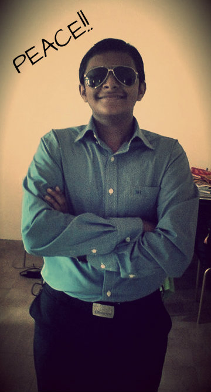

there friends,my name is Alex Desmond and I'm a travel photographer. On this website you can find some pictures I've taken during my travel.
I live in sri lanka. I have been taking pictures since childhood.
Eight years ago when I bought my first DSLR, photography became very important part of my life.
I tend to spend all my free time travelling.
I love the stunning architecture of Istanbul, the tidy countryside landscape of England as well as modern metropolitan area of New York.
But still my favourite places are: New Zealand, Iceland and Nepal. I hope I will have a chance to come back and see these amazing places soon.
After visiting major spots in Europe and in Asia, now is time to see South America. Stay in touch
